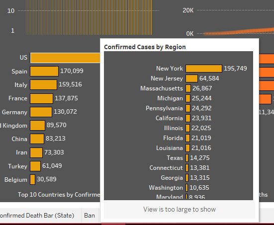

Home
Tableau: COVID-19 Command Center
A quick viz to show how COVID-19 rapidly took over the world.
Background
As the COVID-19 situation evolved in 2020, I created this global coronavirus tracker to identify hotspots and compare trends across different locations. In addition to standard COVID-19 data points (new and cumulative case and death counts), I highlighted regional deltas using tooltips.
Implementation
Tableau Desktop was used to create this Viz. Data acquired from the Tableau COVID-19 Data Hub.
Role
- Data Scientist: Responsible for analyzing, processing, and interpreting data to create actionable visualizations.
Key Features
- Raw Data: Fill
- Time Series Analysis: Fill
- Geographical Heat Map: Fill
- Tool Tip: Fill
- Interactivity: Fill test


View the Viz at my Tableau Public page.